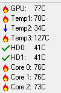

Any luck yet?
I totally forgot that my profile folder and my bootmgr are on that drive as well, so guess that option is out the window :retard:
I’ll try some diagnostic tools later. Procrastination ftw. Thanks for all the help, by the way.
Make sure you do a proper harddisk check though. Most harddisk scanning tools don’t complain about corrupted sectors. They simply mark them as “bad” and tell software to avoid writing in these sectors in the future. This ensures the harddisk is still usable, but doesn’t actually fix anything. The bad sectors will not cause data loss, but can still make the harddisk slow or temporarily unresponsive. Especially with old harddisks that have been used a lot, this is often the case.
It’s always best to check it with a proper diagnostics tool (one that doesn’t run in Windows, but requires you to use a boot CD), preferably from the harddisk manufacturer. For example, if you have a Western Digital harddisk, use WD-DIAG. Checking a sizable harddisk properly takes at least a few hours by the way, but you can just start this before you go to sleep and wake up to find the results. 
So the Windows built-in tool, with both options checked isn’t adequate? Alright, I’ll try that out tonight.
Am I right in thinking that power outages can cause sectors to get corrupted?
Edit: I switched the SATA drive to another port, and the problem hasn’t occurred after about half an hour of playing CoD2. I’m now fairly confident that the connection between my SATA drive and my motherboard is causing the problem.
If it comes back I’ll buy a new cable, see if that fixes it.
The plug on the cable is a bit loose. If I buy a new cable (which is pretty cheap anyway) and the problem persists I’ll have to look further.
Okay thats cool with a bit of luck it should be resolved, if not, hows your handy hand. :retard:
Holy shit, I just installed SpeedFan. Maybe it is overheating after all.
Edit: although it doesn’t really add up. If it’s overheating, wouldn’t the problem be more than a few seconds of lag every minute or so? And can overheating cause CPU usage to spike?
Edit edit: I’m also gonna some hard drive diagnostics over the night.
Edit edit edit: The temp3 thingy seems to be a defective sensor or something, because it’s static at 127° C. The rest of the temps still seem pretty high though.

o.O! Those temperatures do scare me a little! :fffuuu:
I know, it shouldn’t that high. I thought my computer was pretty well-cooled 
In other news, my hard drive failed SeaTools’ Long Drive Self Test. I don’t know what that implies though.
ever made a 24h ram test with memtest? looked that your drivers are all the newest? checked your power supply that it provides enough power on the 12V rail? checked your autostart/background software? the windows services (if they’re unnecesary running)  just, if it’s not the chord… so then you know what to do next…
just, if it’s not the chord… so then you know what to do next…
but what type of CPU, GPU und board u have? the temperatures are faaar toooo hot, man! are you o.c.?
Haven’t done a memtest yet. My PSU is plenty powerful, so that’s probably not it either.
I have a Q6600, a 8800GT and a P6N SLI V2. My CPU was overclocked, but I’ve turned it off now, and the problem is still there.
I can’t figure out how to do some actual diagnostics with Fresh Diagnose
If I don’t forget again, I’m going to do a diagnostic with Western Digital’s LifeGuard tools tonight.
I also discovered that IDE Controller driver seems to be missing according to Device Manager. I’ve tried installing my motherboard’s drivers again, to no avail. I’ve disabled the IDE Controller, and it hasn’t made a difference. Maybe that’s the problem.
That CPU should run about 45 idle and 65 full load if you overclock a little.
My 8800GT never goes above 60 due to its massive dual slot cooler. 
I’ve actually never noticed my CPU being anywhere near as hot as SpeedFan indicated, so I think it’s not accurate.
When I look at the temp in BIOS when it’s idle it’s usually between 40-50° C, and I’ve checked it out after resetting once and it wasn’t much more than 60° C.
My GPU might be slightly too hot though, it only has the standard cooler on it.
I don’t know whether to trust speedfan either, I’m using everest and it gives me different temps.
i know it can decrease air flow, you may do anyway, but remove a side panel, just so you can keep an eye out, possibly get more reliant temprature measuring software?
[COLOR=‘RoyalBlue’]Reset all your overclocks for the time being maybe?
also, it may sound a bit extreme, you dont have any viruses do you? some specifically are power usage and will try to rag your system.
id say, if everything is returned to stock and the problem still persists, maybe faulty hardware?
[COLOR=‘Red’]“My GPU might be slightly too hot though, it only has the standard cooler on it.”
[COLOR=‘Lime’]Your overclocking that on a standard?
Alright, here are my $.02 (the result of about 14 years of building/testing/fixing PCs).
First, temperature sensing software can be tricky. Take, for example, RivaTuner. Depending on the .dll I pick, my GPU reports 40C, 45C, or 50C all at idle (and these all increase accordingly with load). Which one is correct? Hard to tell. I usually check the temperature with multiple tools (HWmonitor, GPU-Z, Speccy, Speedfan, RivaTuner) and then compare which ones match. However, if multiple programs use the same .dll (the file that allows these programs to access the hardware’s temperature sensors) they could all be reporting the same (and possibly incorrect) temperature. So a bag of salt is necessary.
Second, when it comes to troubleshooting a stuttering/freezing problem, there are several things to consider, some of which you’ve already seen but I’ll mention anyway:
- Return ALL clocks (memory, GPU, FSB, CPU Core, etc.) to their default values
- Remove ALL unnecessary hardware (soundcards, network cards, RAID controllers [if not your OS drive], FireWire cards, etc)
- Make sure your system isn’t overheating - check operation of all fans, make sure none are clogged with dust or outright broken
- Do a clean Windows boot - https://support.microsoft.com/kb/310353
- Scan for viruses/malware/rootkits (Recommendations - MBAM, Avira, Spybot, SuperAntiSpyware)
- Check the TaskManager for processes sucking up too many CPU cycles (if something like AdobeSpeedlauncher is taking 50% of your CPU, you have a problem. Although, it’s a problem to ME if programs like that run in general - my XP system has maybe 35 processes running idle, and that includes virus protection. I don’t let extra programs run if they don’t need to ).
For each of these, it’s a one-at-a-time philosophy: for the services, hardware, and overclocking, add one thing back at a time (with a fair amount of testing between each iteration) until the problem happens again. For example, take all your extra hardware out, test for a few days, add back your network card, test for a few days, add back your soundcard and BAM problem happens.
Yes, this can be a PITA to troubleshoot…but it’s also a PITA having the problem in general so (in my opinion) it’s worth the time to test.
DriverSweeper is another good tool - make sure it doesn’t find any drivers for hardware you don’t have (and anytime you uninstall a piece of hardware, it helps to check for remnants of drivers with this software).
Hope this helps, and keep us updated.
EDIT: A potential problem with “a problematic SATA cable” could also be the SATA connector on the drive itself. When I worked at a computer repair shop, I encountered a few SATA drives on which the retaining clip (which keeps the cable plugged in) broke off from the drive. Thus, you could get 10 new cables and it still won’t fix the drive. A temp solution is you use a zip-tie to strap the cable to the drive.
That does sound troubling because the lagging you described is very reminiscent of a driver issue.
Two ideas, Update chipset driver if applicable. And second is to google the hardware ID (device manager>properties>Details>hardware ID)[/SIZE] the device and you might let lucky in finding a compilable driver.
I use the same technique for finding old laptop drivers.
The most accurate CPU temp tool is CoreTemp, never fails on a core 2 duo/quad.
Speccy is also quite a good tool.